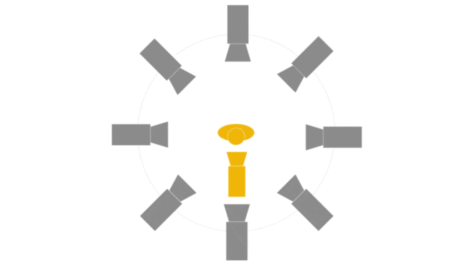
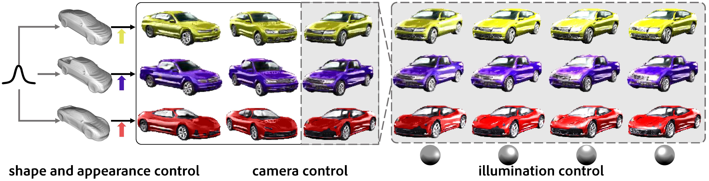
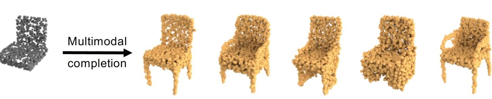
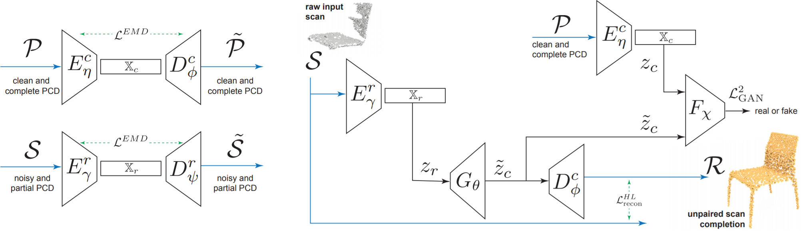
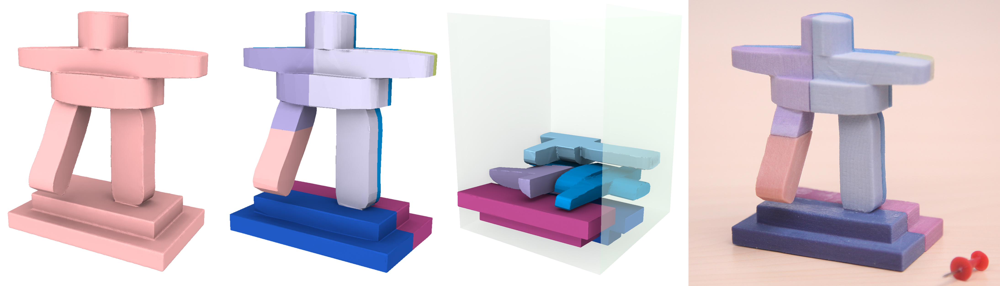
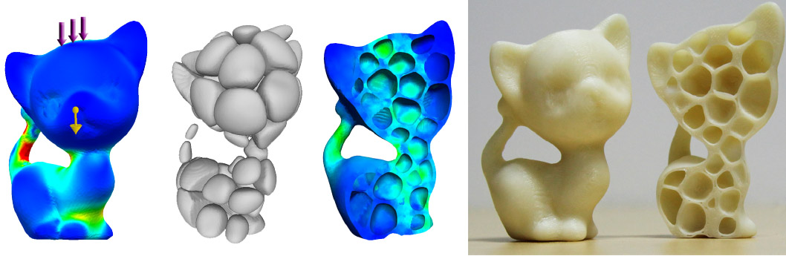

Xuelin Chen (陈学霖)Ph.D
Senior Researcher, Tencent AI Lab Email: xuelin.chen.sdu@gmail.com |
|
|
Publications
 |
VAT-Mart: Learning Visual Action Trajectory Proposals for Manipulating 3D ARTiculated Objects.
Ruihai Wu*, Yan Zhao*, Kaichun Mo*, Zizheng Guo, Yian Wang, Tianhao Wu, Qingnan Fan, Xuelin Chen, Leonidas Guibas, Hao Dong ICLR 2022 [Project Page] |
|
 |
MoCo-Flow: Neural Motion Consensus Flow for Dynamic Humans in Stationary Monocular Cameras.
Xuelin Chen, Weiyu Li, Daniel Cohen-Or, Niloy J. Mitra, Baoquan Chen Eurographics 2022 [Project Page] |
|
 |
Towards a Neural Graphics Pipeline for Controllable Image Generation.
Xuelin Chen, Daniel Cohen-Or, Baoquan Chen, Niloy J. Mitra Eurographics 2021 [Project Page] |
|
 |
Multimodal Shape Completion via Conditional Generative Adversarial Networks.
Rundi Wu*, Xuelin Chen*, Yixin Zhuang, Baoquan Chen (* joint first authors) ECCV 2020 (spotlight) [Project Page] |
|
 |
Unpaired Point Cloud Completion on Real Scans Using Adversarial Training.
Xuelin Chen, Baoquan Chen, Niloy J. Mitra ICLR 2020 Paper Code |
 |
3D Fabrication with Universal Building Blocks and Pyramidal Shells.
Xuelin Chen*, Honghua Li*, Chi-Wing Fu, Hao (Richard) Zhang, Daniel Cohen-Or, Baoquan Chen (* joint first authors) ACM Transactions on Graphics (SIGGRAPH Asia 2018) [Project Page] |
|
 |
Dapper: Decompose-and-Pack for 3D Printing.
Xuelin Chen, Hao Zhang, Jinjie Lin, Ruizhen Hu, Lin Lu, Qixing Huang, Bedrich Benes, Daniel Cohen-Or, Baoquan Chen ACM Transactions on Graphics (SIGGRAPH Asia 2015) [Project Page] |
|
 |
Build-to-Last: Strength to Weight 3D Printed Objects.
Lin Lu, Andrei Sharf, Haisen Zhao, Yuan Wei, Qingnan Fan, Xuelin Chen, Yann Savoye, Changhe Tu, Daniel Cohen-Or, Baoquan Chen ACM Transactions on Graphics (SIGGRAPH 2014) [Project Page] |